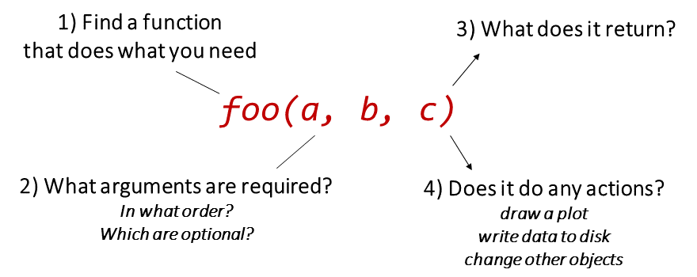

Review of Session 2

“Base R” comes with some basic plot functions:
hist(x)
boxplot(x)
plot(x, y) ## scatterplot
plot(x, y, type = 'b') ## 'b' = plot both points and lines
There are packages designing specifically for plotting (e.g.,
ggplot2)
packages are the key to productivity with R
packages mainly provide additional functions (and sometimes data)
key packages for geospatial data include
sf and
terra
the tidyverse is a family of packages that use piping syntax
install packages from the ‘Packages’ pane in
RStudio, or install.packages()
load packages into memory with
library()
to prevent clashes with duplicate function names, specify the package
using the pkgname:: prefix (e.g.,
dplyr::filter()), or indicate your preferences using the
conflicted package

fun_a() |> fun_b() |> fun_c() |> …
iris |> filter(Sepal.Length > 7) |> mutate(width_length = Sepal.Width * Sepal.Length)
│ │ │
│ │ └─ create a new column
│ │
│ ├─ select those rows where Sepal.Length > 7
│ └─ don't have to specify the data frame
│
└ start with this data frame
ca_counties |>
st_transform(4326) |>
st_geometry() |>
plot()
The most common class for storing tabular data in R is the data frame
View the first few rows of a data frame with
head()
View an entire data frame with
View()
Grab an individual column with $